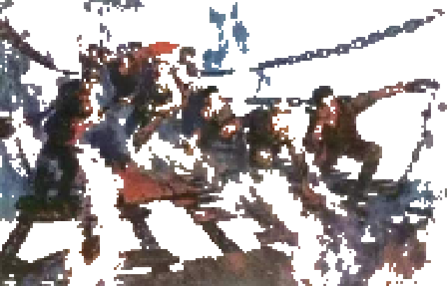
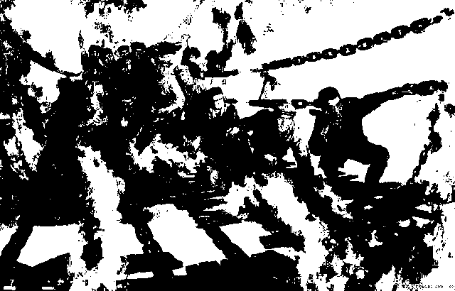
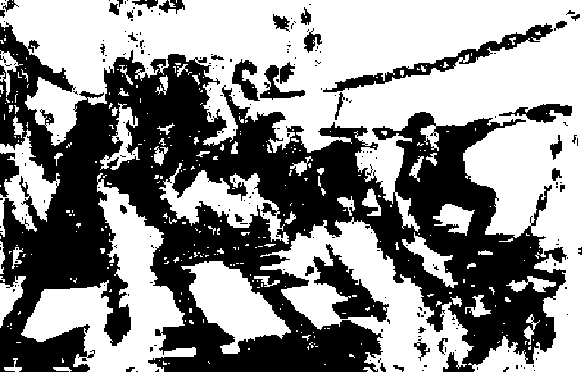
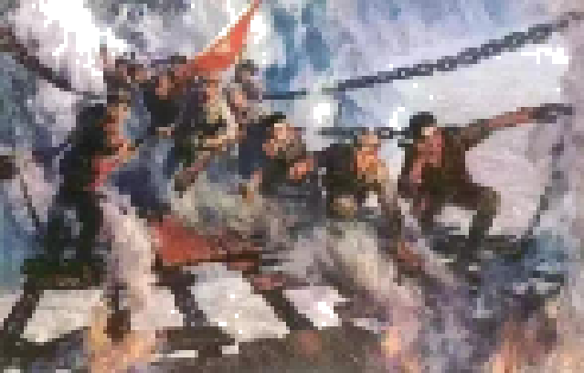
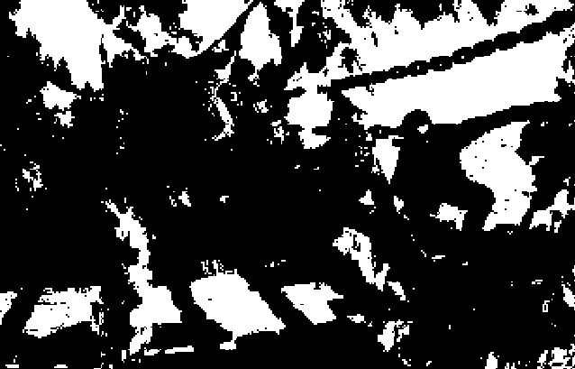

Fly Over the Lugou Bridge
飞夺卢沟桥
Author:Peng Jialun
From: Humanistic Education Edition 2019 Edition Primary School "Yuwen" Grade 6, Unit 4
In May 1935, the Red Army, which went north to fight against Japan, advanced towards the heavenly danger
of Dadu River.
The water of Dadu River is fast flowing, both sides are high mountains and steep ridges, only a wire
bridge can be
passed. This bridge is the Luding Bridge, which the Red Army had to capture to go north. The Kuomintang
reactionary sent
two regiments to defend the Luding Bridge, blocking the Red Army to the north; later transferred two
brigades to
reinforce, wanting to destroy the Red Army on the bridge. Our army has long seen through the enemy's
trick. 28th
morning, the red four regiments received orders from their superiors: "29th morning to seize the Luding
Bridge!" There
were only 20 hours left, and the Fourth Red Regiment was still 240 miles away from Luding Bridge. The
enemy's two
brigades of reinforcements were marching across the river towards Luding Bridge. Getting ahead of the
enemy is the key
to our army's victory over the enemy.
The Fourth Red Regiment crossed the mountains and routed several groups of blocking enemies along the
road, and by 7
o'clock in the evening, it was still 110 miles from Luding Bridge. The soldiers did not care to eat all
day. It was
raining again, drenching them all. The determination to defeat the enemy made them forget hunger and
fatigue. In the
darkness of the night, they braved the rain and stepped on the muddy water to continue their advance.
Suddenly countless torches appeared on the other bank, like a long snake running in the direction of
Luding Bridge,
clearly the enemy's reinforcements. The soldiers of the Fourth Red Regiment simply lit up torches and
lit up the road to
race with the enemy on the other side. The enemy saw this side of the torch, shouting at the top of his
voice: "Which
part are you?" Our soldiers replied in a loud voice: "I ran into the Red Army retreating." The enemy on
the opposite
bank was not suspicious. Like two fiery dragons, the two armies travelled twenty or thirty miles across
the Dadu River.
The rain fell harder and harder, like a drenching, dousing the torches on both sides of the river. The
enemy on the
other side of the river could not go any further and had to stop and camp. The Red Four Regiment still
advancing in the
dark in the rain, finally in the early morning of the 29th rushed to Luding Bridge, the reinforcement of
the two
brigades of the enemy left behind.
Luding Bridge from the water several feet high, is composed of 13 chains: two on each side, is
considered a bridge rail;
the bottom side by side 9, paved with wooden planks, is the bridge. People walking on the bridge
swaying, like swinging.
Now even the planks have been drawn off by the enemy, leaving only the chain. To look under the bridge,
really chilling,
reddish-brown river like a waterfall, from the upper reaches of the gorge straight down, impact on the
rocks, splashing
more than ten feet high waves, the sound of the waves deafening. The city of Luding on the other side of
the bridge had
its back to the mountains, and its west gate was facing the bridge. The two regiments of the enemy
defending the city
had long ago built fortifications on the walls and hillsides, and by virtue of the heavenly dangers,
frantically shouted
to the Red Army: "Come on, see you fly over!"
The Red Fourth Regiment immediately launched a general attack. The regimental commander and political
commissar
personally stood on the bridgehead to direct the battle. Buglers blew the charge horn, all weapons fired
at once, the
sound of gunfire, shouting and killing, all of a sudden shook the valley. The second company acted as a
commando, 22
heroes with short rifles, carrying sabres and grenades, braved the enemy's intensive gunfire and climbed
the chain to
the opposite bank. Following them was the third company, the soldiers, in addition to their weapons,
each with a plank,
paving the bridge as they advanced.
The commandos had just rushed to the opposite bank when the enemy started a fire, and the bridge was
immediately
surrounded by flames. In the nick of time, came the shouts of the regimental commander and political
commissar:
"Comrades! For the cause of the Party, for the final victory, charge!" The heroes heard the Party's
call, even more
defiant, all arrow-like through the blazing fire, rushed into the city, and the city's enemies began a
fierce struggle.
After two hours of fierce fighting, the enemy defending the city was eliminated most of them, and the
rest fled in
distress.
The Fourth Red Regiment bravely captured the Luding Bridge and achieved another decisive victory in the
Long March. The
main force of the Red Army crossed the heavenly danger of the Dadu River and marched to the front line
of the
anti-Japanese resistance.

- 
- 
- 

- 
- 